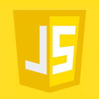

About me
Hello, my name is Nikolai. I am a process engineer at an engine manufacturing plant and am currently taking a course on front-end RSS. He also began to study English. I started learning the front end at the end of February using YouTube videos. I watched videos of various bloggers about web development, website layout marathons, and training videos. Also, without learning about the course from RSS, I absorbed all the information recommended to get started before the course started. It interested me a lot. I love getting new knowledge and putting it into practice. If the topic is very interesting, I can work on it for hours. On this course, I want to get a lot of information, complete various complex tasks, gain experience, and in the future create a portfolio, try to work in a team. I try to spend as much free time as possible learning and I hope that this will help me in acquiring the skills necessary for a front-end developer. My next tasks in this area are learning HTML, CSS, Node.js and React. Then I want to work as a front-end developer. I really like the codewars quests, the rest of the quests are also interesting to me. Creating the first web page in the Animal Shelter task seemed difficult at first, but then the rest of the tasks become easier. My favorite task is the CSS slider. I spent a lot of time to understand this. Thanks to this assignment, I began to understand JavaScript a little. Lately I've been working on an online zoo project. For me, this is the first multi-page project. To create pages and write an add-on, I needed to find out additional information. It helps to have even more knowledge. So it's all about me.
Skills
-

HTML
-

CSS
- 
JS
-

Git
-
Figma
Code
const iconBurger = document.querySelector('.icon_burger');
const navConteiner = document.querySelector('.nav_conteiner');
if (iconBurger) {
iconBurger.addEventListener("click", function() {
document.body.classList.toggle('_lock');
iconBurger.classList.toggle('_active');
navConteiner.classList.toggle('_active');
});
}
Education

Belarusian National Technical University (2011-2016)

The Rolling Scopes School (2022-u.n.)
Contacts
-
Phone: +375 (25) 635-99-24
-
e-mail: prokhorov-94@mail.ru
-
GitHub: NikolayProkhorov
-
Discord: precise4(NikolayProkhorov)#4660